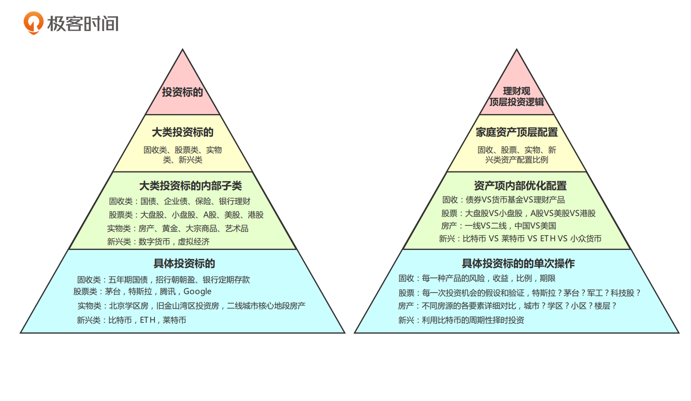
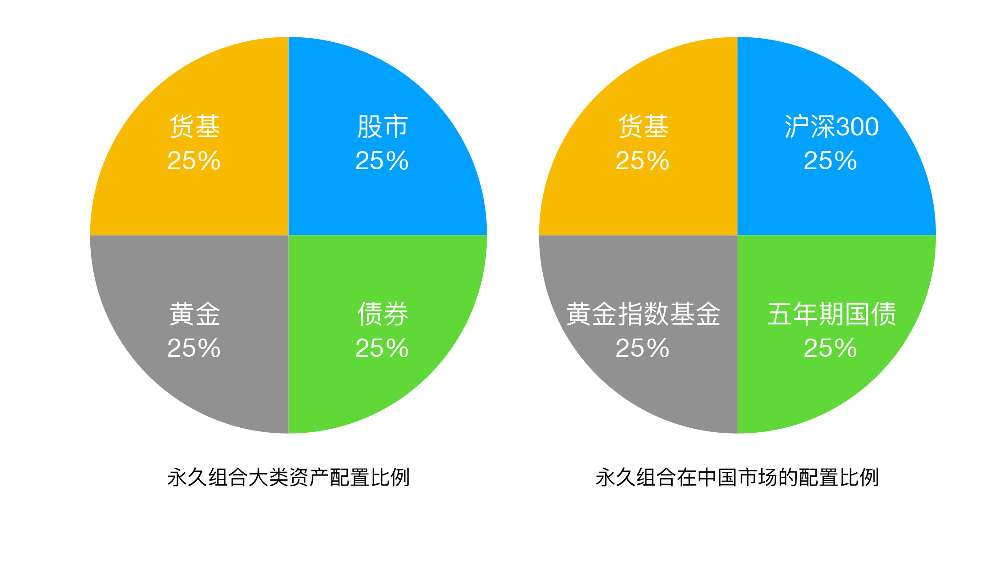
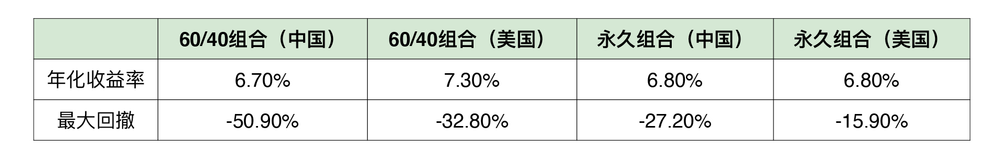
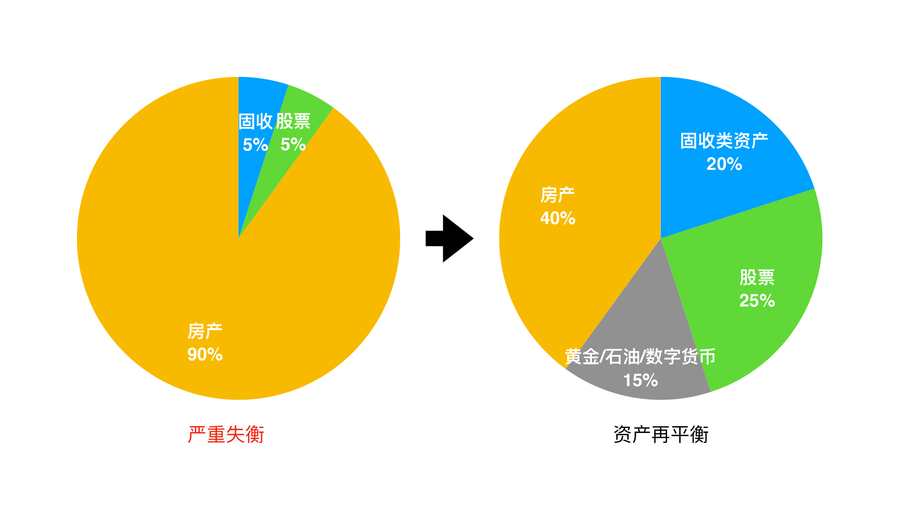

- 00 开篇词 为什么说程序员最适合学财富管理？.md.html
- 01 财富框架：建立属于你自己的财富双塔.md.html
- 02 个人发展：你自己的发展才是最大的财富源泉.md.html
- 03 理财金字塔：如何建立稳固的投资理财结构？.md.html
- 04 实战知识：有哪些收益稳健的经典资产配置组合？.md.html
- 05 支点投资法：主动投资是讲逻辑的！.md.html
- 06 不当韭菜：在财富管理的过程中摆正心态，知己知彼.md.html
- 07 职业方向：如何选择一个有前景的职业方向？.md.html
- 08 职业规划：大公司VS小公司，怎样选择更有前途？.md.html
- 09 期权股权：如何正确处理公司的期权、股权？.md.html
- 10 跳槽涨薪：如何规划一条合理的职业道路？.md.html
- 11 财富拓展：35岁失业？程序员如何拓宽财富渠道？.md.html
- 12 房产投资：如何做出理性的买房决策？.md.html
- 13 实战知识：让我们编程计算下怎么还房贷最合适.md.html
- 14 基金投资：如何让专业人士帮你赚钱？.md.html
- 15 实战知识：如何选出一只优质的基金？.md.html
- 16 股票投资：最适合散户的股票投资方法是什么？.md.html
- 17 投资闭环：如何成为越来越专业的投资者？.md.html
- 18 技术优势：程序员如何用技术超越其他投资者？.md.html
- 19 量化投资：典型的量化投资系统都包含哪些模块？.md.html
- 20 价值投资：永远不过时的中长期投资策略.md.html
- 21 趋势跟踪：怎样跟着趋势一起赚钱？.md.html
- 22 轮动策略：如何踩准市场变换的节奏？.md.html
- 23 对冲思想：这个世界上有稳赚不赔的生意吗？.md.html
- 24 多因子模型：整合不同策略，形成合力的顶层框架.md.html
- 25 机器学习：我们能用机器学习来建立投资模型吗？.md.html
- 26 量化实战：从0到1搭建起一套简单的量化投资系统（上）.md.html
- 27 量化实战：从0到1搭建起一套简单的量化投资系统（下）.md.html
- 番外一 王喆对话李腾：程序员对基金经理的灵魂十问（上）.md.html
- 番外三 有哪些能够持续学习的参考资料和相关网站？.md.html
- 番外二 王喆对话李腾：程序员对基金经理的灵魂十问（下）.md.html
- 番外四 知识总结：这门课的全部思维导图.md.html
- 答疑课堂（一） 财富框架篇、个人发展篇思考题集锦.md.html
- 答疑课堂（二） 投资实战篇、投资进阶篇思考题集锦.md.html
- 结束语 知行合一：财富管理是一生的事情.md.html
- 捐赠
03 理财金字塔：如何建立稳固的投资理财结构？
你好，我是王喆。今天我们来聊一聊财富双塔中的另一个支柱“投资理财塔”。
如果说“个人发展塔”是我们财富的第一桶金，是产生现金流的基石，那么“投资理财塔”就是我们财富的“聚宝盆”和“放大器”。在我的观念中，有两件事情是值得做一辈子的，一是在自己的专业方向上精益求精，二是持续提高自己投资理财的能力。只有这样，我们才能让自己的家庭财富，以及它带来的幸福感最大化。
但是，在我和很多同行交流的过程中，我发现了一个问题：跟他们深厚的专业知识比起来，大部分人对于投资理财的认识往往是非常肤浅，甚至是错误的。那么这一讲，我就先从顶层架构上谈一谈，如何构建我们的投资理财塔，让它像金字塔一样安全稳固。
找“砖块”：这个世界上到底有哪些投资标的？
想造一座金字塔，我们第一步要干什么？肯定是去找造塔的材料。在一座理财金字塔中，最基本的砖块就是一个个独立的“投资标的”。
这里出现了一个专业词汇“标的”，我们今后还会多次用到它。它指的就是我们投资理财过程中的投资目标，比如股市中一支具体的股票，房地产市场中的一套商品房。
接下来，我就从整体上给你介绍下所有的投资标的。你可能觉得会有很多，其实我们用四个类别就能概括所有具体的投资标的了。具体有这四大类：
- 固收类投资标的
- 股票类投资标的
- 实物类投资标的
- 新兴投资标的
固收类投资标的，指的是预期收益率固定，或者波动较小的投资标的。最典型的就是国债、企业债等各类债券。此外，还有一些保险、银行理财产品。它们的特点就是风险相对较小，收益率相对较低但稳定。
股票类投资标的，指的是A股、美股、港股等各大证券市场的股票。这是我们普通投资者讨论最多的投资标的，你身边应该也有不少人期望通过“炒股”来实现财富自由，它的特点你肯定也比较清楚了，就是波动大、收益高、风险高。
实物类投资标的，最典型的代表就是房产。买房是我们每个人都绕不开的话题，也是和家庭、人生密切相关的重大投资。所以，房产往往是对我们普通人来说最重要的实物类投资标的。广义来说，实物类投资标的还包括原油、铁矿石等大宗商品，以及黄金白银、艺术收藏等等。这一类投资标的，总体特点是投资金额较大，流动性较差。
最后一类是新兴投资标的。当前最典型的新兴投资标的就是数字货币。由于数字货币这个概念本身就源于技术圈，相关的区块链、GPU挖矿等话题又是程序员们非常感兴趣的领域，所以数字货币的投资在程序员圈也非常火热。它的特点是未来不确定性强，收益和波动都极大。
这四大类投资标的还可以具体往下细分：每一类投资标的都有内部子类，每一个子类中又有很多具体的投资标的。这样，就可以组成一个从大类到小类，由高层级到低层级排列的投资标的金字塔。具体你可以看下图1的左半部分。
图1右半部分的金字塔，是与左半部分中各层级投资标的对应的投资方法，这就是我在前面一直提到的“投资理财金字塔”。
我们在对家庭资产进行配置时，往往就是遵循这种金字塔式的配置方法：
- 首先，在自己的理财观，也就是顶层投资逻辑的指导下，先做家庭资产的顶层配置，确定上述四大类投资标的的配置比例。
- 然后，根据对每类资产的了解程度，做资产项内部的进一步优化；
- 最后，落实到每一次具体的投资操作上。
这种自顶向下的投资方法，我把它称为“层级迭代式投资法”。

我需要了解所有的投资标的吗？
面对这样一座复杂的投资标的金字塔，你可能一时有点懵，因为看上去要掌握的东西实在是太多了。我们真的需要了解所有的投资标的吗？
其实是不用的。研究投资标的时，我们只要遵循这个原则就够了：要尽可能地熟悉全部四大类投资标的的特点，然后根据自己的兴趣和擅长的领域，有针对性地深入研究具体的投资标的。
这其实和我们程序员进行系统设计是一个道理：如果你想让你的系统性能很优秀，就要统筹设计系统中的各个模块。只要缺少了一个模块，就可能影响整个系统的稳定性和运行效率。但是，一个人不可能成为所有模块的专家，所以我们只要能在统筹全局的同时，深入一个或几个点，就足够了。
要熟悉四大类投资标的，听上去还是一个艰巨的任务，别害怕，只要使用下面三个方法，你就不难掌握各个大类标的的基本投资方法：
方法一：趁早开始。
我在第一讲中就提到过，要让自己的财富飞轮早点转起来，越早越好。熟悉各个投资标的也是一样，你熟悉得越早，就可以越早享受它带来的好处。
方法二：设置观察仓。
设置观察仓，就是指把少量的、无关痛痒的钱投入到你想要了解的投资标的上。这部分钱会自然而然地吸引你的注意力，让你去观察这个标的的风险和收益特性，在做到知己知彼后，你就可以再做进一步的投资。
这个方法我自己屡试不爽，既能快速熟悉不同标的的特点，又不用承受太大的投资损失。所以，我建议你在进入任何一个新的投资领域时，都先采用这个方法，快速学习的同时又不会伤筋动骨。
方法三：结合兴趣，有重点地学习。
这一点前面也提到了。我鼓励你去多了解各类投资标的的特性，并不是要你了解所有细分的投资标的，事实上也没有人可以做到这一点。你要做的，是结合自己的兴趣，进行有重点的学习。
还是拿我自己的经历给大家举例子：我对固收类、股票类、实物类、新兴类这四大类投资标的都有研究，分别是从银行理财产品、科技股、买房和比特币入手的。在广度上，对大类投资标的有一个的正确的认知，同时对自己感兴趣的点有较深入的研究，这才是正确的学习方向。
在这里，我要再次强调一下全面了解四大类投资标的的重要性：这四大类投资标的，都有自己的宏观周期性规律。对我们普通投资者来说，利用这些宏观规律赚钱，远比钻进一个点，做非常狭窄的投资研究要简单。
这里可以总结一句我的投资心得：深度的钻研，应该在广度的low hanging fruit都已摘完的前提下进行。这一点，对平衡我们的时间投入和投资回报来说非常重要。
打地基：资产配置的经典组合
我相信所有接触过投资理财的同学都听过一句话，“鸡蛋不能放在一个篮子里”。这句话听上去简单，却是现代投资组合理论的核心思想。
现代投资组合理论是由诺贝尔经济学奖获得者马科维茨在1952年提出的，它的影响力一直持续至今。可以说，这个理论是我们构建一个稳健的资产配置体系的基石。
如果说不同类别的投资标的，是构成我们投资理财塔的材料，那现在我们已经收集了足够的“砖块”，可以运用合理的资产配置方式，给我们的“投资理财塔”打地基了。即使我们一点理财知识都不知道，只要把这个地基打好，就能获得非常理想的投资收益。
在这里，我就介绍一种财富管理行业中非常著名的资产配置方案，永久组合。
“永久组合”是1973年由美国专业投资人哈利·布朗提出的。顾名思义，他提出这个组合的初衷就是让投资人只要“永远”保持这个组合比例，就能获得不错的稳定收益。
这个组合非常简单，用一句话就能说清楚它的配置方案，即“25%美国标普500指数基金，25%的美国十年期国债指数基金，25%的黄金指数基金，25%货币基金”。
当然，中国市场的具体投资标的肯定是不同的，把这个方案套用到中国市场就是“25%沪深300指数基金，25%的五年期中国国债，25%的黄金指数基金，25%货币基金”。

显而易见，永久组合就是把你的财富一切四分，平均地投资到股市、债券、黄金和货基这四种资产类别上去。那么这个组合的收益是多少呢？我们看看下面的表格：

你可以看到，从2002年初到2020年末，这将近20年中，只要你坚持使用永久组合，就算什么都不用改变，无论在中国还是美国，你都能获得6.8%的年化收益。
只要你稍微有一点理财经验，你就知道这个年化收益不仅远高于货币基金3%左右的年化收益，还远高于市面上任何一款银行理财产品的年化收益。更重要的是，永久组合在中美市场的最大回撤仅有27.2%和15.9%，又远低于A股50%以上的最大回撤，风险小很多。
正因为这样，如果你是一个财富管理的新手，只要遵循这些经过时间充分验证的资产配置方案来配置你的财富，就可以获得稳定且可观的财富收益。
当然，资产配置的经典组合远不止永久组合一种。我会在下一讲中，邀请我们的投资顾问李腾，给你详细讲解几种经典的投资组合方案。
资产配置失衡，如何做到“资产再平衡”？
关于资产配置，我还想提醒你一件重要的事：要时刻关注自己的资产配置是不是平衡。
需要特别强调的是，这里的资产不仅限于我们的投资闲钱，还应该把自己的房产，甚至是包括父母、配偶在内的整个家庭的资产都考虑进来。如果这个大家庭的资产严重偏向某一单项资产，那么就存在资产配置失衡的问题，你的“投资理财塔”就是不稳固的。
举个例子来说，我是在2017年第一次系统性梳理自己整个大家庭的资产的。我发现了一个非常严重的问题：我们夫妻二人以及双方的父母组成的大家庭，家庭资产严重偏向房产，占比居然达到了90%以上。而且，由于中国人安土重迁的观念，这其实是中国家庭普遍存在的现象。
站在2017年这个时间点上，我们且不论房价未来会怎样，单就这个家庭的资产配置而言，房产的占比显然已经过高了。这样的严重失衡状态，可能会带来两个后果：
- 单一资产的风险敞口过大。房地产市场的波动将严重影响整个家庭的资产价值。
- 房产占用了过多的资金，这会导致我丧失其他领域的很多投资机会。我通俗地称其为miss value。
既然意识到了问题，我们就要去解决，解决办法就是“资产的再平衡”，也就是把你的资产配置从失衡的状态纠正回来。
于是，我从2017年起，主要采取了两个措施：
首先，我把自己小家庭的收入，以及我父母的收入，全部配置到了股票类和固收类资产上去。在这个基础上，考虑到自己的风险偏好，我把自己的收入全部配置到了股票类资产上，父母的收入，则以40%和60%的比例配置到股票类和固收类资产中去。
其次，我直接进行了投资大类的置换。我对中国房地产的基本判断是，认为中国房地产市场将进入一个长期稳定，房价只可能出现小幅上升的阶段。于是，我在2018年卖掉了一套小的投资房，把还完房贷后的剩余资金以接近永久组合的比例投资到了其他投资大类中。
经过这一系列的调整，我整个大家庭的资产配置状态变得更加健康，抗风险能力也更强了。下面的图片，就显示了我从2017年到现在的资产再平衡过程。

诚然，我们每个人、每个家庭都有不同的资产配置状况，我的做法不可能适合所有的人。但问题的关键就在于，你是否有资产配置的概念，以及切实执行资产配置理念的行动力。
如果你从来没有认认真真地梳理过自己的家庭资产情况，那么你的“投资理财塔”一定是根基不稳、风雨飘摇的。所以，在总结这一讲之前，我要给你留一个小任务：
拿一张纸，或者打开一个文档，花半个小时的时间，列出你所有的家庭资产。然后，看看它们是不是有严重失衡的情况。如果有，想一想自己接下来应该怎么做。
小结
今天我详细介绍了财富双塔中的另一座塔，“投资理财塔”的搭建和管理方法。这一讲的关键点非常多，但却异常重要，我把最关键的五点列在了下面，你一定要再看一遍：
- 所有的投资标的可以分为四大类：固收类、股票类、实物类、新兴类。
- 要尽力了解所有的投资标的大类，设置观察仓就是很好的了解新标的的方法。
- 在做资产配置时，要遵循层级迭代式投资法，自顶向下地规划你的投资行为。
- 记住永久组合的投资比例：25%股票，25%债券，25%黄金，25%货基。
- 要时刻关注自己的大类资产是否存在失衡的情况，如果有，就要制定切实的计划去进行资产再平衡。
思考题
- 我之前和身边一些人交流的时候，发现他们有一个想法：进行资产配置只在资产规模较大的时候才有必要。关于这个问题，你是怎么想的呢？欢迎在评论区和我分享你的看法。
- 我们在投资标的大类中没有提到基金，你觉得是为什么？或者说，你认为基金应该算作一大类投资标的吗？
以上就是这一讲的全部内容。学到这里，如果你有很多投资经验，我猜你可能会这么说：我觉得永久组合6.8%的收益率不算高啊，我炒股炒得好的话，可比这个收益率高多了。
我为这样的想法点赞，在投资收益上有更高的追求，肯定是更好的。别着急，我会在05讲解决这个问题，教你根据自己的优势去做主动投资，追求更高的收益。接下来的一讲，我会邀请李腾介绍几个好操作，收益率又很稳健的经典投资组合，我们下一讲见。
© 2019 - 2023 Liangliang Lee. Powered by gin and hexo-theme-book.